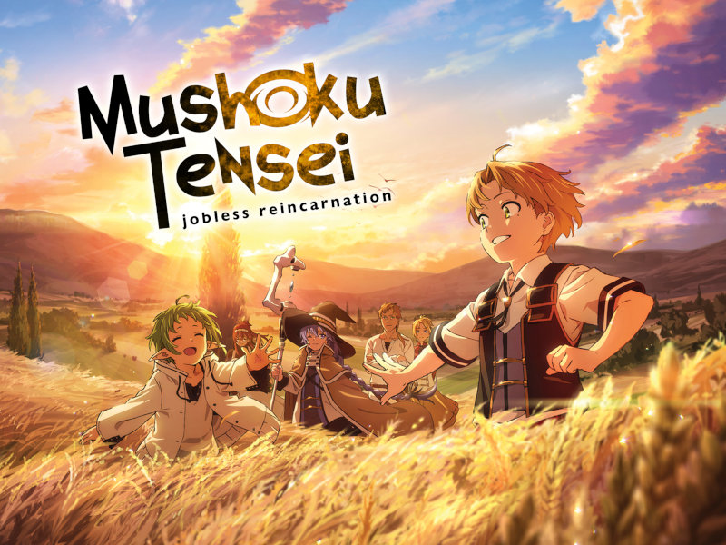

Isekai
Bom não é novidade pra ninguém que um dos principais tipos de animes que saem constatemente no mercado é o estilo isekai, e se isso acontece é porque vende muito bonequinho depois hahaha, mas enfim, todo mundo uma vez ou outra já assistiu ou está acompanhando neste momento um anime nesse estilo, e é por isso que ele vai ser o primeiro da lista.
Konosuba!
Esse pode passar por muitas críticas por ser o primeiro da lista hahaha, ele está nessa posição por ser um estilo de anime isekai mas que quebra com todos os esteriótipos do estilo, misturando isso com uma comédia que não chega perto em nem um outro anime que eu tenha visto, por mais que as vezes a comédia em konosuba seja um pouco forçada por certas coisas... enfim pode ter certeza que konosuba não se trata do heroísmo e glorificação do herói em matar o tão temido Rei Demônio. Kazuma, nosso personagem principal, não se importa nem um pouco em fazer as coisas que deseja e procrastinar boa parte do tempo, isso e muitas outras peculiaridades que você só vai entender assistindo o anime, boa sorte!
Mushoku Tensei
Agora sim!, estamos falando de mais um anime polêmico... mas esse de fato é um isekai que para muitos é o melhor até agora, pelo menos em questão de desenvolvimento de personagem, em Moshoku Tensei acompanhamos a história de Rudeus, que em sua vida anterior era apenas mais um morador do japão desempregado e depressivo que sofria bullyng. Neste isekai acompanhamos desde a infância do personagem até sua vida adulta, pelo menos até o momento, e por conta desse desenvolvimento que vemos o diferencial nesse isekai, ele também trata sobre questões de superação e aceitação sobre si mesmo, pois mesmo reencarnando em outro mundo Rudeus lembra do seu passado e carrega toda dor de sua vida anterior.